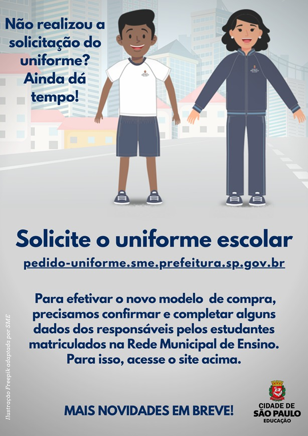
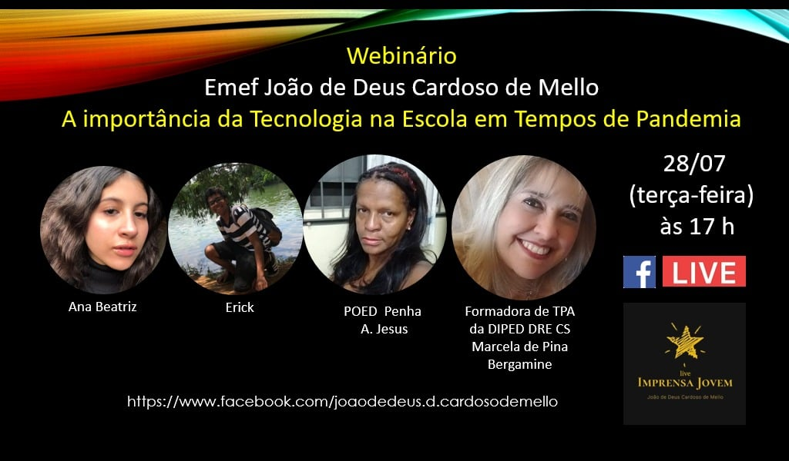
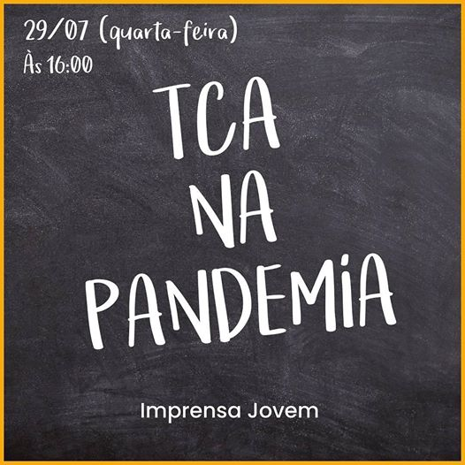
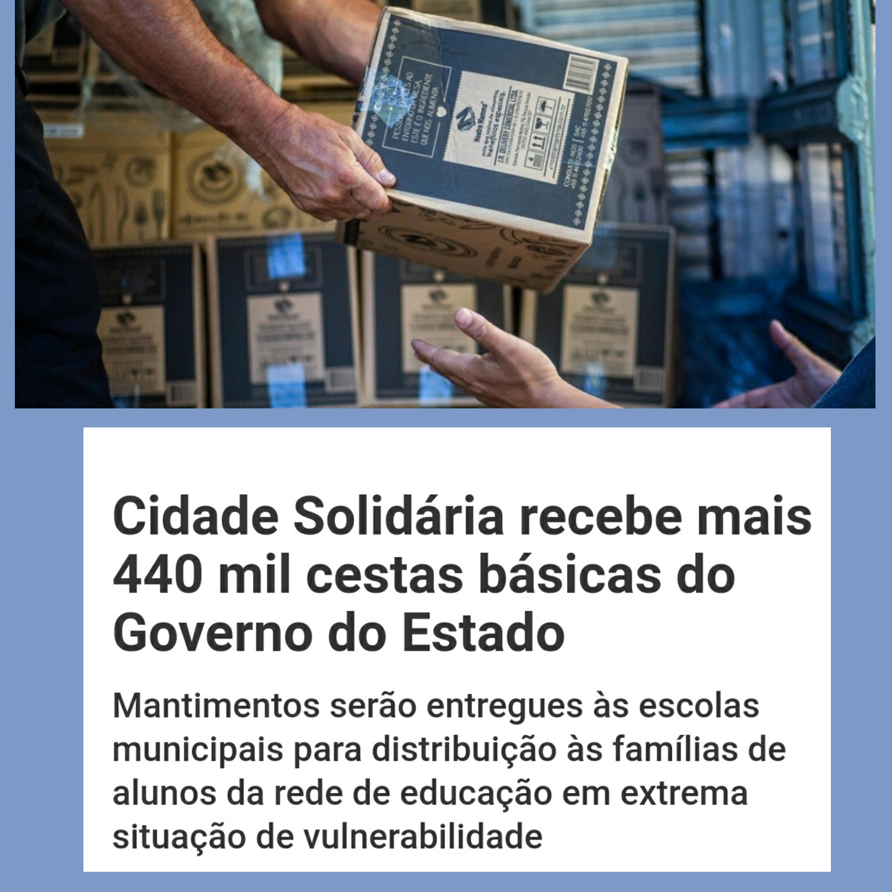

04/11/2020
Bate-papo Virtual
Atenção alunos! 🚨🚨🚨
Se você é do Ensino Fundamental II ou EJA, participe de nosso bate- papo digital! Abordaremos um dos temas mais falados da atualidade.
👀 Ficou curioso?
Então vem teclar com a gente! 😉
Será na próxima terça-feira, 10/11 às 14h via Google Meet:
https://meet.google.com/sqv-gjoh-pzb
*Em breve estenderemos o convite ao Fund. I.
29/07/2020
UNIFORME ESCOLAR
 Solicite aqui28/07/2020
WEBINÁRIOS
Nessa semana o tema será "A importância da Tecnologia em Tempos de Pandemia".
Série de Webnários da Imprensa Jovem "Joãozinho de Mello TV".
A cada semana um tema diferente, toda terça-feira às 17h. Não perca!
Acesse nosso canal do Youtube27/07/2020
TCA
Live sobre o TCA quarta-feira (29/07) às 16h. Se tiver alguma dúvida coloque aqui nos comentários, vamos responder na live.
Acesse nosso canal do Youtube27/07/2020
CADÚNICO

"A Prefeitura de São Paulo, por meio das secretarias municipais de Assistência e Desenvolvimento Social (SMADS) e de Educação (SME), está realizando mutirões semanais de cadastramento e atualização do CadÚnico em diversos bairros da capital desde a última segunda-feira (13/07). Nos mutirões, os moradores de cada região também podem tirar dúvidas dos programas de transferência de renda."
Fique ligado!
Em nossa região ocorrerá:
- Grajaú - CEU Três Lagos e CEU Navegantes: de 20 a 25/07.
17/07/2020
CESTAS BÁSICAS
Informamos que alguns alunos de nossa escola foram contemplados no programa "Cidade Solidária" para o recebimento de uma cesta básica, conforme critérios da SME, SMADS e Governo do Estado de São Paulo. Algumas delas ainda não foram retiradas e encontram-se disponíveis na escola.
Horários de atendimento:
- 10h - 12h
- 13h - 15h
CLIQUE AQUI para verificar a lista dos contemplados.
Mais informações